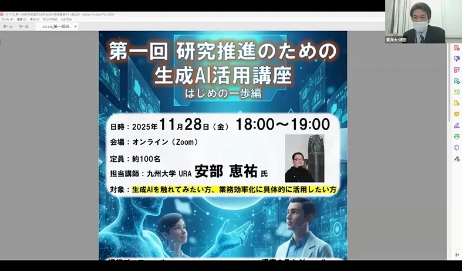
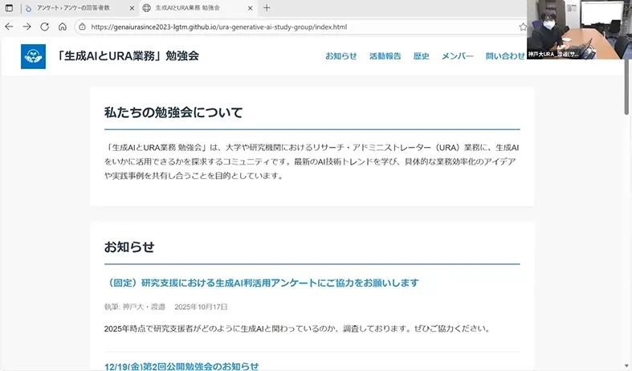
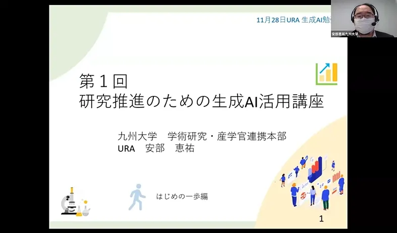

12/12 第二回「研究推進のための生成AI活用講座 ダッシュ編」開催報告
2025年12月12日、大学や研究機関のURA・研究開発マネジメント人材を対象に、オンライン（Zoom）で「第一回研究推進のための生成AI活用講座 ダッシュ編」を開催しました。主催はRA協議会スキルプログラム専門委員会公認勉強会「生成AIとURA業務」、講師は九州大学URAの安部恵祐氏で、68名が参加しました。
講座では、まず生成AIの急速な普及と業務への影響を概観し、ハルシネーションやワークスロップなどの課題、情報セキュリティ・研究倫理への配慮といった基本的な注意点を整理したうえで、生成AIの仕組みや特徴、主要モデル（GPT、Claude、Geminiなど）の違い、利用時に考慮すべき設定（プライバシー、学習モード）を解説し、さらに、プロンプト設計の基本と段階的思考（CoT）を取り入れた指示方法を紹介しました。続いて、URA業務に直結する事例として、助成金申請書のドラフト作成、研究計画整理、情報収集や要約、広報資料作成など、生成AIを活用した業務効率化の実践的な活用方法を具体的なプロンプト例とともに紹介しました。また、質疑応答では、研究助成マッチングサービスの利用イメージや、機関内に生成AI環境を構築することの考察について質問があり、意見交換されました。
なお、本講座のZoomの設定に誤りがあったため、開始時間に接続できないトラブルがありました。ここにお詫びいたします。
次回は12月19日に「ダッシュ編」、1月16日に「資金獲得実技編」を予定しています。



＜ お知らせ一覧に戻る